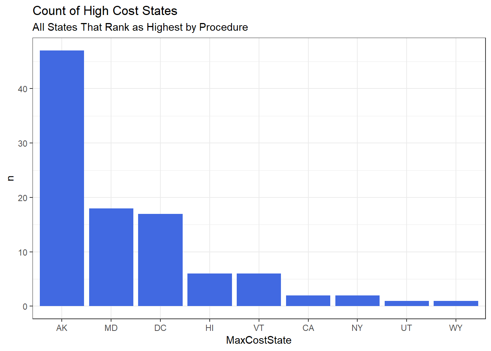
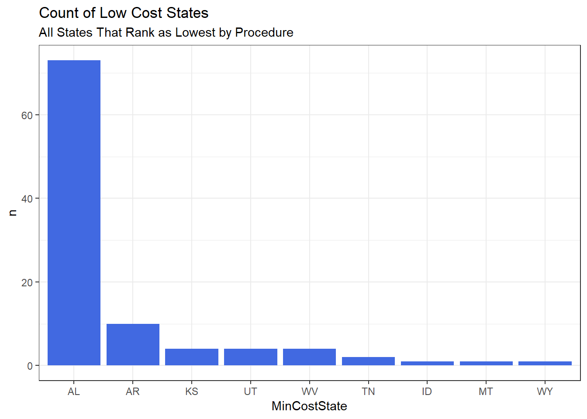
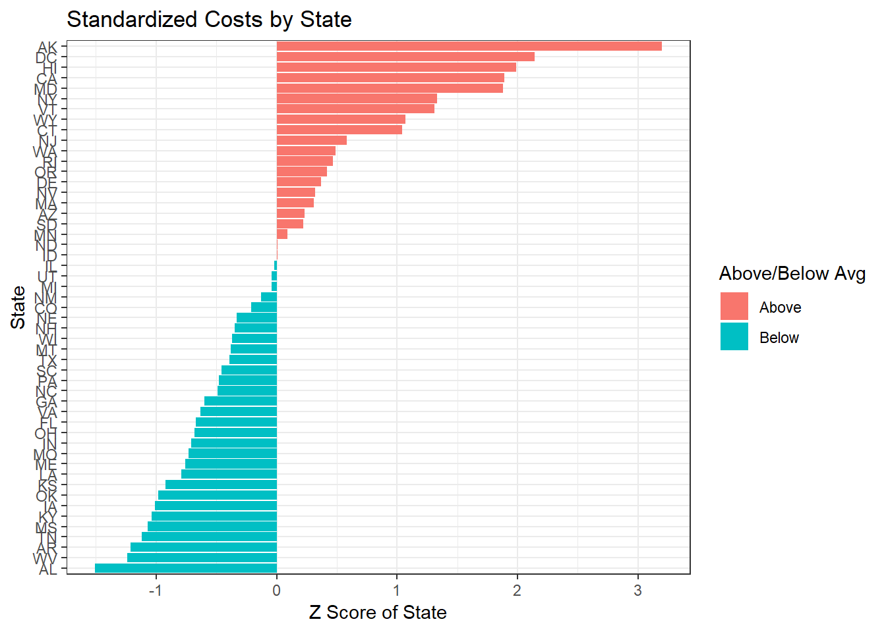
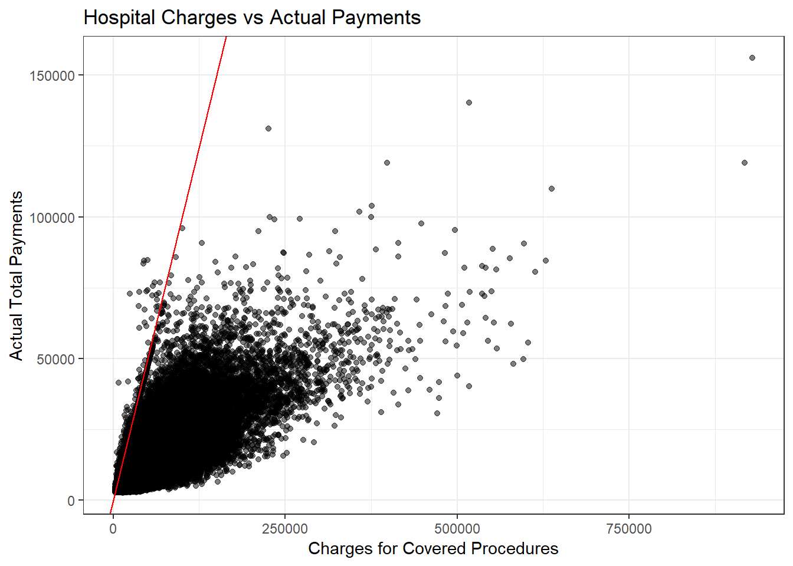
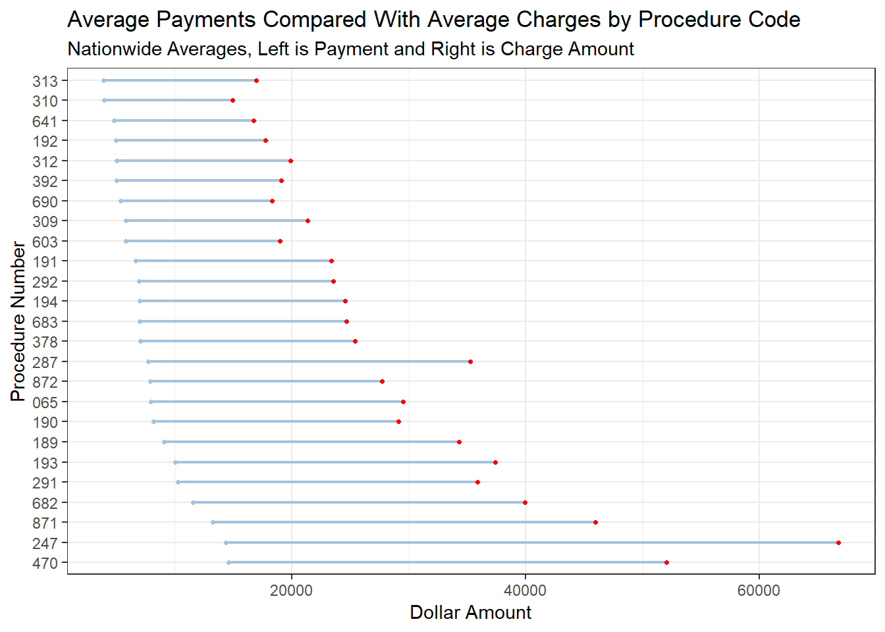

Why does it cost Medicare $28,000 for a joint replacement in Maryland but only $17,000 in Alabama?
Why do some hospitals charge 3 or 4 or even 10 times the amount that they know they will actually be paid for a service/procedure?
To address the first question there is something in healthcare called Hospital Referral Regions (HRR’s). In a nutshell, some areas of the country are more expensive. More can be read on HRR’s here: link
Furthermore, Medicare only pays 80% of their allowed amount for a procedure with the remaining 20% falling to the patient (or secondary insurance if the patient has it). Because Medicare patients can visit any facility in the country that takes Medicare, it may make financial sense for someone in Alaska to fly to Alabama to have their hip replaced.
For the second question we will examine the correlation of hospital charges and the actual amount that they collect.
The dataset contains the top 100 inpatient procedures for Medicare paitents for the year 2011. This includes hospitals in all states, including Washington DC, for a total of 163,065 unique entries.
Each entry has information for the average charge for each facility for the top 100 procedures, the average Medicare payment (Medicare’s 80% of the allowable), and the average total payment (Medicare’s 80% plus any patient deductibles, coinsurance, or payments from secondary payers).
I have included all of the R code in this document.
You can download the data here
library(readr)
library(dplyr)
library(ggplot2)
library(ggalt)
library(DT)ipp <- read_csv("Inpatient_Prospective_Payment_System__IPPS__Provider_Summary_for_the_Top_100_Diagnosis-Related_Groups__DRG__-_FY2011.csv")names(ipp) <- c("DRGDefinition", "ProviderId", "ProviderName", "ProviderStreetAddress", "ProviderCity", "ProviderState", "ProviderZipCode",
"HospitalReferralRegionDescription", "TotalDischarges",
"AverageCoveredCharges", "AverageTotalPayments",
"AverageMedicarePayments")As mentioned, this dataset includes the top 100 inpatient procedures that Medicare pays for. The below table ranks those procedures by the sum of discharges nationwide.
We see that Major Joint Replacement is the most common inpatient procedure with 427,207 discharges in 2011, and Laparoscopic Cholecystectomy is ranked at 100 with 16,157 discharges.
procedure_rank <- ipp %>%
group_by(DRGDefinition) %>%
summarise(Procedure_Count = sum(TotalDischarges)) %>%
arrange(desc(Procedure_Count))
datatable(procedure_rank) %>%
formatCurrency('Procedure_Count',currency = "", interval = 3, mark = ",", digits = 0)Medicare will cover 80% of the Medicare allowable. The remaining 20% will either fall to the patient as coinsurance or to the patient’s secondary insurance. Since we are given the average Medicare payment for each hospital for each procedure we can work backwards to find the patient’s responsibility of 20%.
The below table shows which states have the highest and lowest coinsurance for each procedure. Pay attention to the PercentageDifference column. This shows the percentage the difference between the highest Medicare payment in the country and the lowest.
The corresponding max and min states are also included.
ipp_state_proc <- ipp %>%
group_by(ProviderState, DRGDefinition) %>%
summarise(AverageCost = round(mean(AverageMedicarePayments),2))
ipp_proc1 <- ipp_state_proc %>%
group_by(DRGDefinition) %>%
summarise(MaxCost = round(max(AverageCost),2), MinCost = round(min(AverageCost),2),
PercentageDifference = paste0(round((MaxCost / MinCost)*100,2),"%")) %>%
left_join(ipp_state_proc, by = c("DRGDefinition" = "DRGDefinition",
"MaxCost" = "AverageCost"))
ipp_proc2 <- ipp_proc1 %>%
left_join(ipp_state_proc, by = c("DRGDefinition" = "DRGDefinition",
"MinCost" = "AverageCost"))
names(ipp_proc2) <- c("DRGDefinition", "MaxCost", "MinCost",
"PercentageDifference", "MaxCostState", "MinCostState")
ipp_proc2 <- ipp_proc2 %>%
mutate(CopayMaxState = round((MaxCost/0.8)*0.2,2),
CopayMinState = round((MinCost/0.8)*0.2,2)) %>%
arrange(desc(CopayMaxState)) %>%
select(c(1,4,5:8))
datatable(ipp_proc2)Taking these states in the above grouped dataset, we can create the below graphs. They show the states that show up on the cheapest and most expensive columns the most by count.
ipp_proc2_max <- ipp_proc2 %>%
group_by(MaxCostState) %>%
summarise(n = n()) %>%
arrange(desc(n))
ipp_proc2_max$MaxCostState <- factor(ipp_proc2_max$MaxCostState, levels = ipp_proc2_max$MaxCostState)
ggplot(data = ipp_proc2_max, aes(x = MaxCostState, y = n)) +
geom_bar(fill = "royal blue", stat = 'identity') +
labs(title = "Count of High Cost States",
subtitle = "All States That Rank as Highest by Procedure") +
theme_bw()
ipp_proc2_min <- ipp_proc2 %>%
group_by(MinCostState) %>%
summarise(n = n()) %>%
arrange(desc(n))
ipp_proc2_min$MinCostState <- factor(ipp_proc2_min$MinCostState, levels = ipp_proc2_min$MinCostState)
ggplot(data = ipp_proc2_min, aes(x = MinCostState, y = n)) +
geom_bar(fill = "royal blue", stat = 'identity') +
labs(title = "Count of Low Cost States",
subtitle = "All States That Rank as Lowest by Procedure") +
theme_bw()
If you’re a Medicare benficiary with health costs on the horizon, you may want to consider retiring to Alabama and firmly forget about any salmon fishing in Alaska.
Next, let’s standardize the costs for all states across all procedures and convert to z-scores. This will create a mean of 0 and allow us to compare all of the states to each other.
ipp_z <- ipp %>%
group_by(ProviderState) %>%
summarise(MeanCostsAll = mean(AverageTotalPayments)) %>%
mutate(Cost_z = round((MeanCostsAll - mean(MeanCostsAll))/sd(MeanCostsAll),2)) %>%
mutate(High_Low = ifelse(Cost_z < 0, "Below", "Above")) %>%
arrange(Cost_z)
ipp_z$ProviderState <- factor(ipp_z$ProviderState, levels = ipp_z$ProviderState)
ggplot(data = ipp_z, aes(x = ProviderState, y = Cost_z, fill = High_Low)) +
geom_bar(stat = "identity") +
coord_flip() +
theme_bw() +
labs(title = "Standardized Costs by State",
y = "Z Score of State",
x = "State") +
guides(fill=guide_legend(title="Above/Below Avg"))
To most people, it would make sense to charge amounts corresponding with what you know you are going to be paid. If I was running a business, it wouln’t make sense for me to charge $3 when I know ahead of time that I am only going to get one half to one third of that (or 1/10 of that in a lot of cases).
Contracts with the different insurance companies “insure” this. If I charge $3 for a service when I am only contracted to receive $1, why don’t I just charge $1 to begin with?
The reason is that providers have an inverse incentive to keep their charges as high as possible. If my charges are low, I am more likely to get a lower contractual rate. One insurance company does not pay the same rate as another, and it is in the provider’s best interest to have the contractual rates as high as possible.
The below graph shows the charges on the x axis and the actual payments on the y axis. To illustrate how skewed these charges are compared to the actual payments I’ve added a regression line with a slope of 1 and an intercept of 0. If there was a one to one relationship (I charge $1 and get paid $1) the points would all cluster around this line. This is very far from the reality.
ggplot(data = ipp, aes(x = AverageCoveredCharges, y = AverageTotalPayments)) +
geom_point(alpha = 0.5) +
geom_abline(intercept = 0, slope = 1, color = "red") +
theme_bw() +
labs(title = "Hospital Charges vs Actual Payments",
x = "Charges for Covered Procedures",
y = "Actual Total Payments")
The regression line really shows how skewed these charges are compared to the payments received. Remember, the line has a slope of 1 but is nearly vertical. You may think this doesn’t matter because these charges seem arbitary, and they are most definitey arbitrary. But, if you ever find yourself without insurance or your procedure is not covered by your insurance you will be charged, and expected to pay, these insane hospital charges.
How far off are the top 25 procedures. I’ve taken the nationwide average charge for each procedure and the corresponding national total payment. This of course dilutes the differences in regions, but even with that dilution the differences are astounding.
procedure_25 <- procedure_rank[1:25,]
ipp_top_25 <- ipp %>%
filter(DRGDefinition %in% procedure_25$DRGDefinition)
ipp_top25_proc <- ipp_top_25 %>%
group_by(DRGDefinition) %>%
summarise(AveragePayment = mean(AverageTotalPayments), AverageCharge = mean(AverageCoveredCharges)) %>%
mutate(ProcedureNumber = substr(DRGDefinition, 1, 3)) %>%
arrange(desc(AveragePayment))
ipp_top25_proc$ProcedureNumber <- factor(ipp_top25_proc$ProcedureNumber, levels = ipp_top25_proc$ProcedureNumber)
ggplot(data = ipp_top25_proc, aes(x = AveragePayment, xend = AverageCharge, y = ProcedureNumber)) +
geom_dumbbell(color="#a3c4dc",
size=0.75,
colour_xend = "red") +
theme(plot.title = element_text(hjust=0.5, face="bold"),
axis.title.x = element_blank(),
axis.ticks=element_blank(),
legend.position="top",
panel.border=element_blank()) +
theme_bw() +
labs(title = "Average Payments Compared With Average Charges by Procedure Code",
subtitle = "Nationwide Averages, Left is Payment and Right is Charge Amount",
y = "Procedure Number",
x = "Dollar Amount") Even with taking averages of the averages to get to national numbers, we still have huge discrepancies between the amount charged by the hospitals and the amount actually paid for the procedure.
Use the above table’s search function to match the procedure number to the procedure description.
My purposely sensational title aside, these high charges can hurt people.
To fix this, the incentive for providers to have artificially inflated charge amounts would have to be removed.
There are many pushes by Medicare and the major insurance companies to move away from fee for service models to performance based payments. As a data freak, I love this. Under these alternative models hospitals and provider groups would be reimbursed by quality metrics and shared savings as opposed to how many procedures they bill. Data would be shared by the insurance companies so the provider groups can track utilization of their patient population.
Examples can be seen below:
For future analysis of this dataset I would like to dive into the granularity within different states. I would be interested to see how much driving from one hospital to the next could lower a patient’s deductible for a given procedure.
It also turns out that after spending hours on this dataset, the data is available for years more recent than 2011. I would like to see how much the costs have changed over time for the listed procedures.
If there are any questions, comments, or errors in anything above, please shoot me an email at [justin.m.talbot@gmail.com]